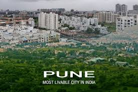

About Pune
 |  |
Pune also known as Poona,is the seventh most populous city in India and the second-largest city in the state of
Maharashtra, with an estimated population of 7.4 million as of 2020.t has been ranked "the most liveable city in
India" several times.
Pune is widely regarded to be the second major IT hub and the most important automobile and
manufacturing hub in India. Pandit Jawaharlal Nehru, while on a visit to the city in the late '50s, was very
impressed with Pune's many high-quality educational institutions and he is the one who gave the city the
sobriquet of "the Oxford of the East". India's first indigenously run girls' school was started in
Pune by Savitribai Phule. The city has emerged as a major global educational hub in recent decades, with nearly
half of the total number of international students in the country studying in Pune. Research institutes
of information technology, higher education, management science and advanced training attract students and
professionals from India and overseas.